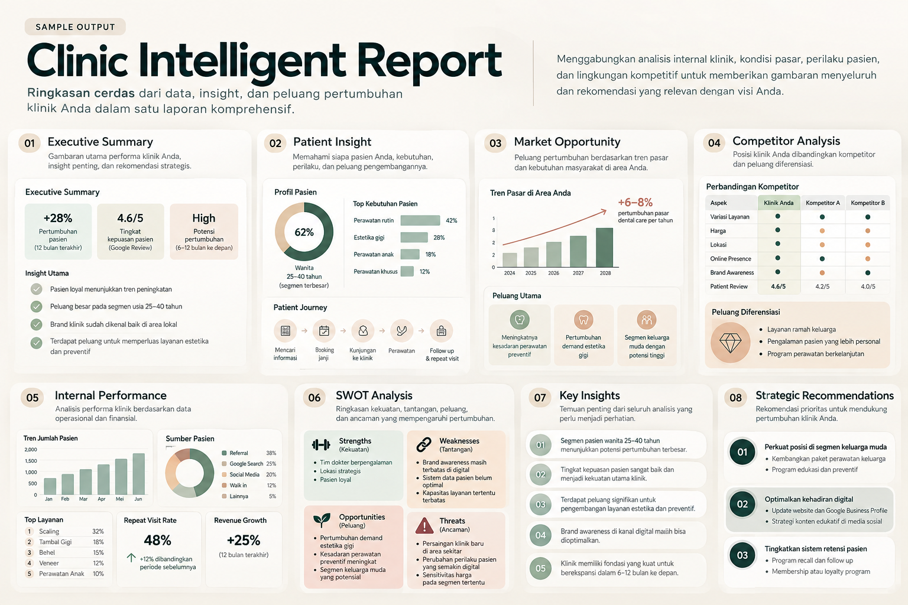
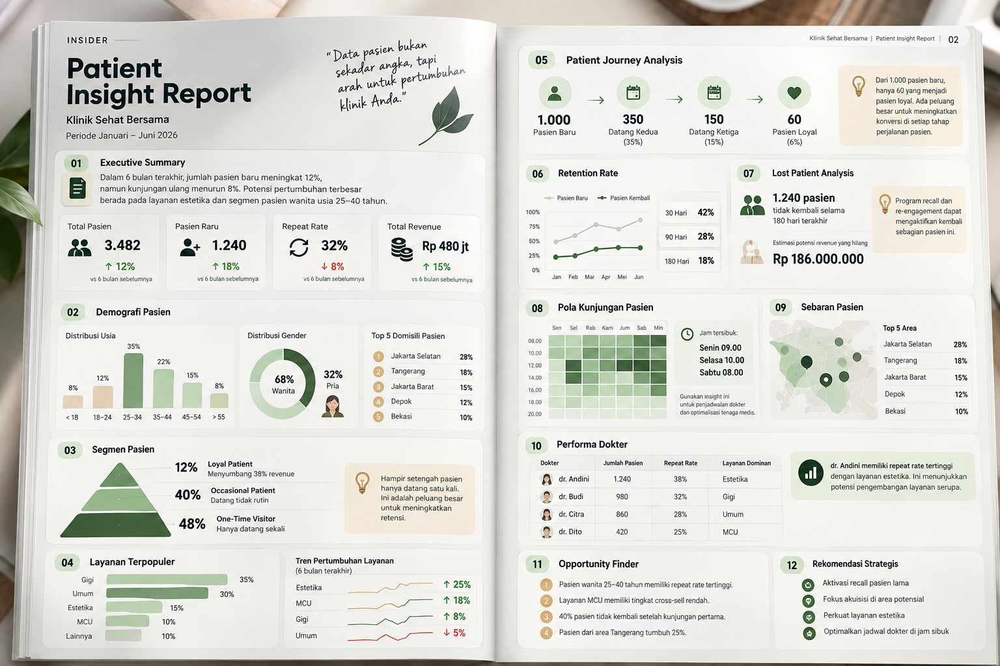
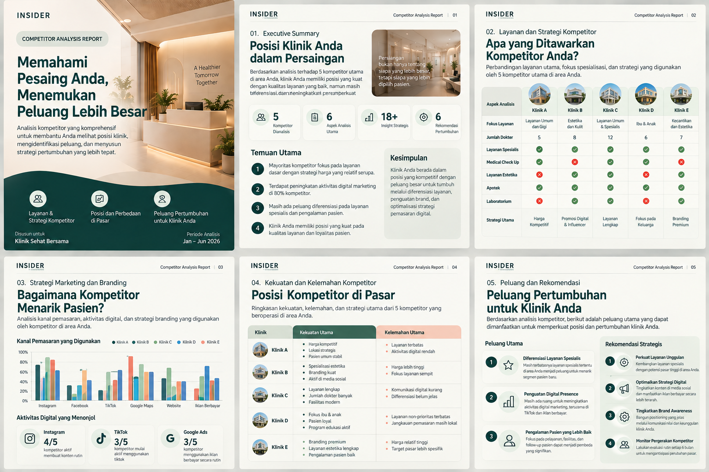
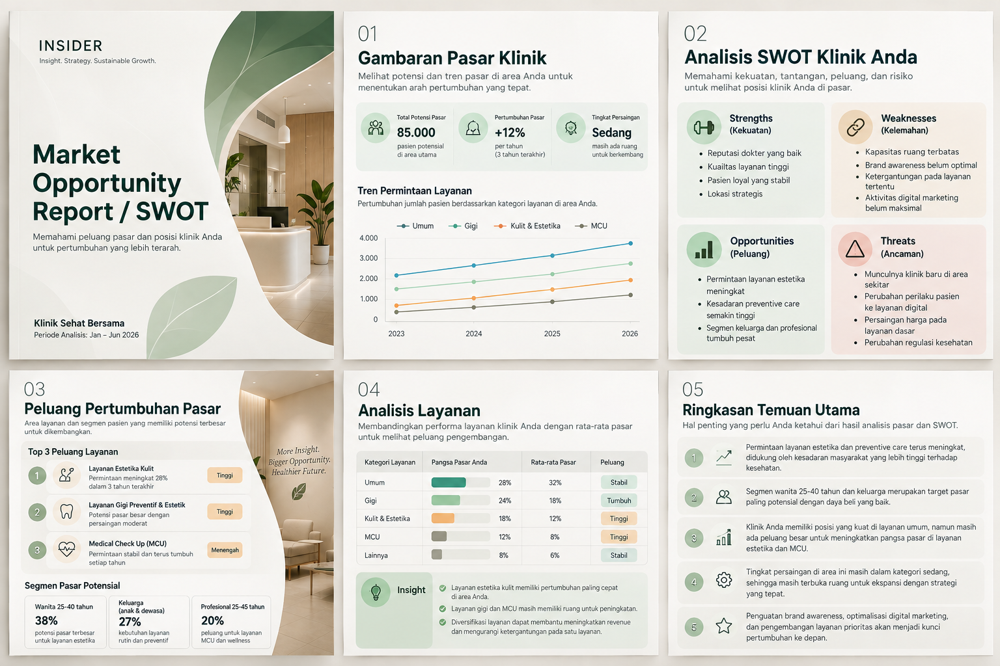
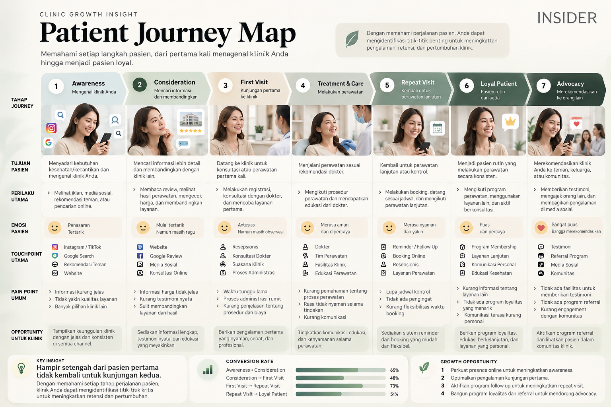
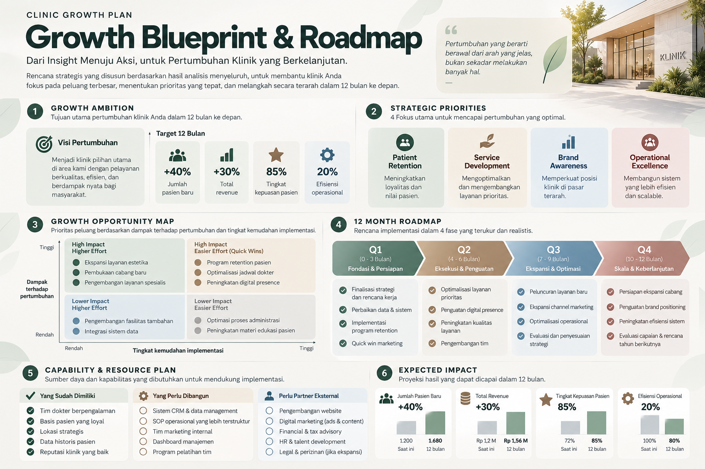

Menampilkan 6 laporan riset
Arahkan kursor ke gambar untuk zoom & melihat detail informasi

Executive Intelligence
Sample Report
Executive Intelligence
8 Area Analisis
Clinic Intelligence Report
Ringkasan cerdas dari data internal, insight pasar, perilaku pasien, dan peluang pertumbuhan klinik dalam satu laporan komprehensif.
★ 8 Dimensi Analisis
Pasien & Finansial
Strategic Actions
Lihat Detail Laporan ↗
Klik untuk pratinjau modal

Patient Insight
Insight Report
Pasien & Retensi
Jan - Jun 2026
Patient Insight Report
Ubah data pasien menjadi arah pertumbuhan nyata: segmentasi loyalitas, performa dokter, dan analisis re-engagement pasien lama.
★ 3.482 Pasien Dianalisis
Repeat Rate 32%
Recall Plan
Lihat Detail Laporan ↗
Klik untuk pratinjau modal

Kompetitor & Pasar
Market Audit
Kompetitor & Pasar
6 Aspek Utama
Competitor Analysis Report
Pahami posisi klinik Anda di tengah peta persaingan lokal dan temukan celah diferensiasi layanan serta strategi pemasaran.
★ 5 Kompetitor Utama
18+ Insight Strategis
Actionable Plan
Lihat Detail Laporan ↗
Klik untuk pratinjau modal

Market & SWOT
Strategic SWOT
Kompetitor & Pasar
SWOT & Market Growth
Market Opportunity & SWOT Report
Menemukan peluang pasar terbesar, mengukur pangsa layanan, dan memetakan kekuatan serta kelemahan internal klinik secara terstruktur.
★ Potensi 85.000 Pasien
Peluang Estetika & Gigi
Matriks SWOT
Lihat Detail Laporan ↗
Klik untuk pratinjau modal

Patient Journey
Journey Map
Pasien & Retensi
7 Tahapan Pasien
Patient Journey Map Report
Memahami setiap langkah pasien dari pertama kali mengenal klinik hingga menjadi pasien loyal yang aktif merekomendasikan.
★ 7 Tahap Journey
Touchpoints & Pain Points
Retention Leakage
Lihat Detail Laporan ↗
Klik untuk pratinjau modal

Growth Blueprint
Roadmap Plan
Strategi & Roadmap
12 Bulan Aksi Terarah
Growth Blueprint & Roadmap Report
Rencana strategis 12 bulan dari diagnosis data menuju prioritas terukur: retensi, pengembangan layanan, branding, dan kapabilitas tim.
★ 4 Fase (Q1 - Q4)
Opportunity Matrix
Target Terukur
Lihat Detail Laporan ↗
Klik untuk pratinjau modal
Tidak ada laporan yang sesuai
Coba gunakan kata kunci lain seperti "pasien", "kompetitor", "SWOT", "roadmap", atau pilih filter "Semua".